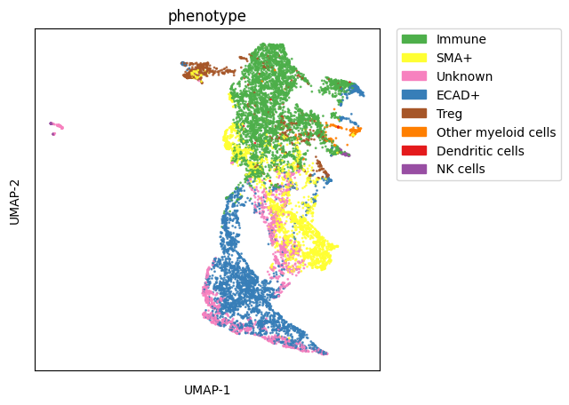

üëΩ Cell phenotyping using a Hierarchical Prior Knowledge Table
1 2 3 4 | |
Running SCIMAP 2.2.9
1 2 | |
This method requires more work but is significantly more sensitive and scalable compared to clustering-based approaches.
To run the method, you'll need two main components:
To successfully execute the method, you will need:
- A
.csvfile containing manual gates. Should manual gates be absent, the algorithm will attempt to adjust the data by fitting two Gaussian distributions. Nonetheless, employing manual gating is recommended due to its heightened sensitivity. - A
.csvfile outlining a gating workflow strategy.
The execution of the algorithm is structured into three primary steps:
- Gate Identification: Utilize
sm.pl.napariGaterto identify the gates. - Data Rescaling: Apply
sm.pp.rescaleto adjust the data based on the identified gates. - Phenotyping: Process the rescaled data using
sm.tl.phenotypeto run the phenotyping algorithm.
Step 1: Define manual gates
1 | |
This method will launch a napari window displaying several layers, each representing a different gate. You can toggle these layers on and off with the goal of identifying the gate that most accurately captures the positive cells. It's crucial to zoom and pan through the image to ensure the selected gate encompasses all positive cells throughout the image. Bear in mind that achieving 100% accuracy might not be feasible, so a certain margin of error may need to be accepted. This process is iterative, meaning adjustments may be necessary even after initial phenotyping and analysis. Manual gating must be conducted independently for each marker and each image.
1 | |
1 | |
/var/folders/k5/3pb7tmfn0551jy0cf67ljdf00000gq/T/ipykernel_8388/1794404260.py:1: UserWarning:
NOTE: napariGater() is currently in beta testing. If you encounter any issues, please report them at: https://github.com/labsyspharm/scimap/issues
Initializing...
Loading image data...
Calculating contrast settings...
Initialization completed in 0.01 seconds
Opening napari viewer...
Napari viewer initialized in 0.91 seconds
Gate confirmed for CD57 at 7.00
Gate confirmed for ELANE at 7.80
Gate confirmed for CD45 at 6.40
Gate confirmed for CD11B at 7.60
Gate confirmed for SMA at 7.50
Gate confirmed for CD16 at 6.50
Gate confirmed for ECAD at 7.35
Gate confirmed for FOXP3 at 7.36
Gate confirmed for NCAM at 7.00
1 2 | |
| exemplar-001--unmicst_cell | |
|---|---|
| markers | |
| CD11B | 7.60 |
| CD16 | 6.50 |
| CD45 | 6.40 |
| CD57 | 7.00 |
| ECAD | 7.35 |
| ELANE | 7.80 |
| FOXP3 | 7.36 |
| NCAM | 7.00 |
| SMA | 7.50 |
Remember to save the adata object to ensure that the gates are preserved. üñ¥ You can perform partial gating and return later to complete the rest. The function keeps track of the markers and images you‚Äôve already gated and will display this information in the interface when you return. üîÑüéØ
Importing Gates via a CSV File üìÑ‚ú®
If you’re not using napariGater(), you can also import gates using a CSV file. Here are two important points to keep in mind:
1Ô∏è‚É£ The marker column must be named exactly as "markers" üè∑Ô∏è.
2Ô∏è‚É£ The remaining columns should contain the gates for each image in the dataset. üñºÔ∏è Ensure the column names precisely match the 'imageid' column in the adata object. üߨ You can retrieve it by typing:
1 | |
Multiple Images and Uniform Gates üõ†Ô∏è
If you have multiple images and want to apply the same gate to all of them, you have two options:
1Ô∏è‚É£ Copy-paste the same gate values across all columns in your CSV file. üñãÔ∏è
2️⃣ Alternatively, use just one column named "gates" (with no additional columns). In this case, the same gate will be applied to all images in your dataset, provided there is more than one image. ✅
A Final Note üìù
When you run the rescale function without specifying anything for the gate parameter, it will try to auto-identify gates using a GMM (Gaussian Mixture Model) function. ‚ö†Ô∏è However, this method is generally not very accurate, and we discourage relying on it. üö´
If gates are missing for some images or markers, the GMM will be automatically applied. üîÑ Be cautious when interpreting results for those images or markers! üßê
With these tips, you‚Äôll have more control over your gating process! üöÄ
1 2 | |
| markers | exemplar-001--unmicst_cell | |
|---|---|---|
| 0 | ELANE | 7.80 |
| 1 | CD57 | 8.90 |
| 2 | CD45 | 6.40 |
| 3 | CD11B | 7.60 |
| 4 | SMA | NaN |
| 5 | CD16 | 6.50 |
| 6 | ECAD | 7.35 |
| 7 | FOXP3 | NaN |
| 8 | NCAM | 7.00 |
You'll observe that the first column lists the markers present in the dataset, while the second column specifies the gate, named after the specific image's ID found in adata.obs['imageid']. This is especially useful when dealing with datasets containing multiple images, as it allows for a distinct column for each image. I have also intentionally left out 2 markers (SMA and FOXP3) where GMM will be applied automatically. You can control the GMM using the gmm_components parameter.
Although visual gating has proven to be the most sensitive method for us, you can also apply single and bi-marker gating approaches, similar to FACS, to assist in determining a threshold.
1 2 | |
We also use bimarker gating to identify a gate
1 | |
/Users/aj/miniconda3/envs/scimap/lib/python3.10/site-packages/mpl_scatter_density/generic_density_artist.py:77: RuntimeWarning:
All-NaN slice encountered
/Users/aj/miniconda3/envs/scimap/lib/python3.10/site-packages/mpl_scatter_density/generic_density_artist.py:82: RuntimeWarning:
All-NaN slice encountered
Step 2: Rescale the data
You can provide gating information by either inputting a manual_gates.csv file into the gate parameter or, if you used napariGater, directly using adata.uns['gates'].
For markers not included in the manual_gates.csv file, the function automatically identifies gates using a Gaussian Mixture Model (GMM) algorithm. This provides thresholds for markers where manual gates are unavailable. üéØ
1 2 3 | |
/Users/aj/miniconda3/envs/scimap/lib/python3.10/site-packages/scimap/preprocessing/rescale.py:145: FutureWarning:
Downcasting object dtype arrays on .fillna, .ffill, .bfill is deprecated and will change in a future version. Call result.infer_objects(copy=False) instead. To opt-in to the future behavior, set `pd.set_option('future.no_silent_downcasting', True)`
Running GMM for image: exemplar-001--unmicst_cell
Applying GMM to markers: SMA, FOXP3
Scaling Image: exemplar-001--unmicst_cell
Scaling ELANE (gate: 7.800)
Scaling CD57 (gate: 8.900)
Scaling CD45 (gate: 6.400)
Scaling CD11B (gate: 7.600)
Scaling SMA (gate: 6.597)
Scaling CD16 (gate: 6.500)
Scaling ECAD (gate: 7.350)
Scaling FOXP3 (gate: 6.307)
Scaling NCAM (gate: 7.000)
As you can see GMM was automatically applied to SMA and FOXP3
Step 3: Run the phenotyping algorithm
1 2 3 4 | |
| Unnamed: 0 | Unnamed: 1 | ELANE | CD57 | CD45 | CD11B | SMA | CD16 | ECAD | FOXP3 | NCAM | |
|---|---|---|---|---|---|---|---|---|---|---|---|
| 0 | all | ECAD+ | pos | ||||||||
| 1 | all | Immune | pos | ||||||||
| 2 | all | SMA+ | pos | ||||||||
| 3 | Immune | NK cells | allpos | neg | allpos | ||||||
| 4 | Immune | Other myeloid cells | pos | ||||||||
| 5 | Immune | Treg | pos | ||||||||
| 6 | Other myeloid cells | Dendritic cells | allneg | allneg |
As it can be seen from the table above,
- The
first columnhas to contain the cell that are to be classified. - The
second columnindicates the phenotype a particular cell will be assigned if it satifies the conditions in the row. Column threeand onward represent protein markers. If the protein marker is known to be expressed for that cell type, then it is denoted by eitherpos,allpos. If the protein marker is known to not express for a cell type it can be denoted byneg,allneg. If the protein marker is irrelevant or uncertain to express for a cell type, then it is left empty.anyposandanynegare options for using a set of markers and if any of the marker is positive or negative, the cell type is denoted accordingly.
To give users maximum flexibility in identifying desired cell types, we have implemented various classification arguments as described above for strategical classification. They include
- allpos
- allneg
- anypos
- anyneg
- pos
- neg
pos : "Pos" looks for cells positive for a given marker. If multiple markers are annotated as pos, all must be positive to denote the cell type. For example, a Regulatory T cell can be defined as CD3+CD4+FOXP3+ by passing pos to each marker. If one or more markers don't meet the criteria (e.g. CD4-), the program will classify it as Likely-Regulatory-T cell, pending user confirmation. This is useful in cases of technical artifacts or when cell types (such as cancer cells) are defined by marker loss (e.g. T-cell Lymphomas).
neg : Same as pos but looks for negativity of the defined markers.
allpos : "Allpos" requires all defined markers to be positive. Unlike pos, it doesn't classify cells as Likely-cellType, but strictly annotates cells positive for all defined markers.
allneg : Same as allpos but looks for negativity of the defined markers.
anypos : "Anypos" requires only one of the defined markers to be positive. For example, to define macrophages, a cell could be designated as such if any of CD68, CD163, or CD206 is positive.
anyneg : Same as anyneg but looks for negativity of the defined markers.
1 | |
Phenotyping ECAD+
Phenotyping Immune
Phenotyping SMA+
-- Subsetting Immune
Phenotyping NK cells
Phenotyping Other myeloid cells
Phenotyping Treg
-- Subsetting Other myeloid cells
Phenotyping Dendritic cells
Consolidating the phenotypes across all groups
/Users/aj/miniconda3/envs/scimap/lib/python3.10/site-packages/scimap/tools/phenotype_cells.py:174: SettingWithCopyWarning:
A value is trying to be set on a copy of a slice from a DataFrame.
Try using .loc[row_indexer,col_indexer] = value instead
See the caveats in the documentation: https://pandas.pydata.org/pandas-docs/stable/user_guide/indexing.html#returning-a-view-versus-a-copy
/Users/aj/miniconda3/envs/scimap/lib/python3.10/site-packages/scimap/tools/phenotype_cells.py:290: FutureWarning:
DataFrame.fillna with 'method' is deprecated and will raise in a future version. Use obj.ffill() or obj.bfill() instead.
/Users/aj/miniconda3/envs/scimap/lib/python3.10/site-packages/scimap/tools/phenotype_cells.py:290: FutureWarning:
Downcasting object dtype arrays on .fillna, .ffill, .bfill is deprecated and will change in a future version. Call result.infer_objects(copy=False) instead. To opt-in to the future behavior, set `pd.set_option('future.no_silent_downcasting', True)`
1 2 | |
phenotype
Immune 3977
ECAD+ 2873
SMA+ 1947
Unknown 1496
Treg 657
Other myeloid cells 170
NK cells 64
Dendritic cells 17
Name: count, dtype: int64
1 | |
Visualisation of the Results
1 2 | |
1 2 | |
/Users/aj/miniconda3/envs/scimap/lib/python3.10/site-packages/umap/umap_.py:1943: UserWarning:
n_jobs value -1 overridden to 1 by setting random_state. Use no seed for parallelism.
1 | |
/Users/aj/miniconda3/envs/scimap/lib/python3.10/site-packages/scimap/plotting/umap.py:304: UserWarning:
No data for colormapping provided via 'c'. Parameters 'cmap' will be ignored

1 2 | |
1 2 3 4 5 6 7 8 9 10 11 12 13 | |
Save Results
1 2 | |
1 | |